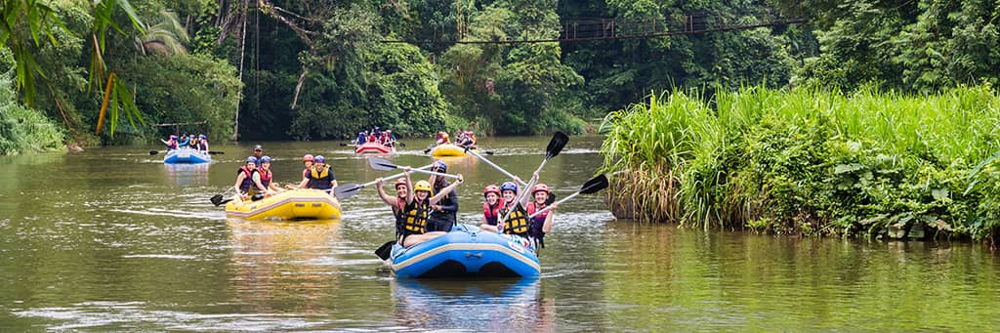
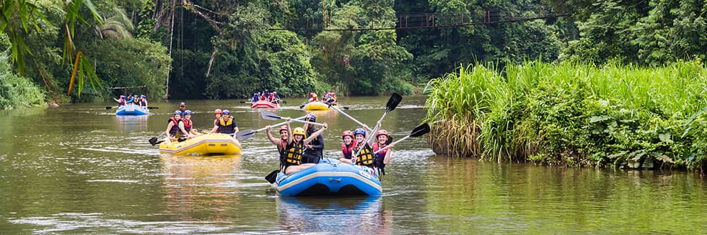

Embracing life, and nature, while creating a healthy mind and body.

Embracing life, and nature, while creating a healthy mind and body.
Founded in 1962 we have been creating great experences for over 60 years. There is an Adventure waiting to be discovered by you. All levels welcome.

 
